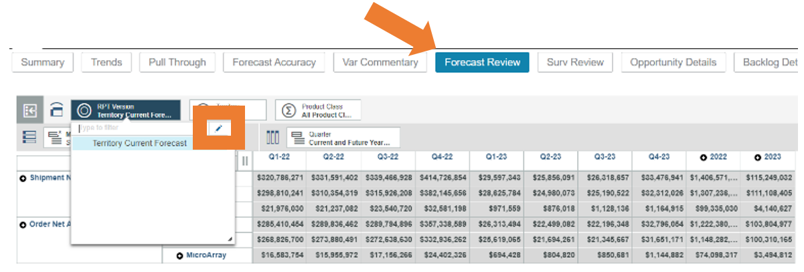

The forecast version in Sales Reporting will always default to Territory Current Forecast as this is the version that will reflect input updates made to your forecast.
The ability to customize a view is available on the following tabs in the Sales Reporting book:
• Forecast Review
• Opportunity Details
• Backlog Details
• Order/ Ship Details
Each of the views work similar to a Pivot table where you have:
• Filters: Use to filter your calculations or summary
Example: Product Class, Territory, Forecast Version
• Columns: The unique values displayed across the top row of the table
Example: Years, Quarters, Forecast Version
• Rows: The unique values displayed in the first column
Example: Territory Name, Product, Line of Business, etc.
• Values: Sum of all measures
Example: Shipment and Order Forecast Entry amount, Actuals, etc.
To access prior versions, select Forecast Review Tab.
• Click the RPT Version Territory Current Forecast to activate a drop down and select the pencil icon

• Select ‘All Roots” in the Available Members to view drop down.
• Click on the version you would like to review.
• Insert by clicking on the arrow and Apply and Close. This version will now show up in your drop-down options to view.